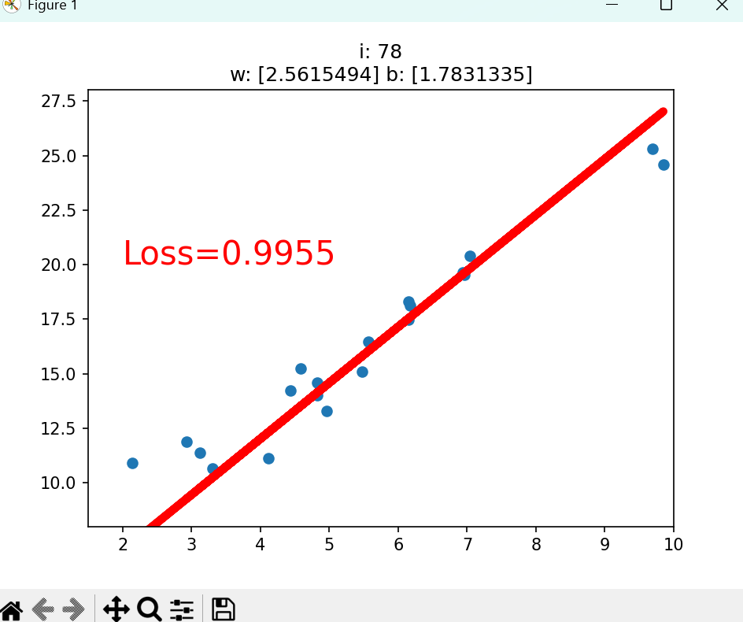
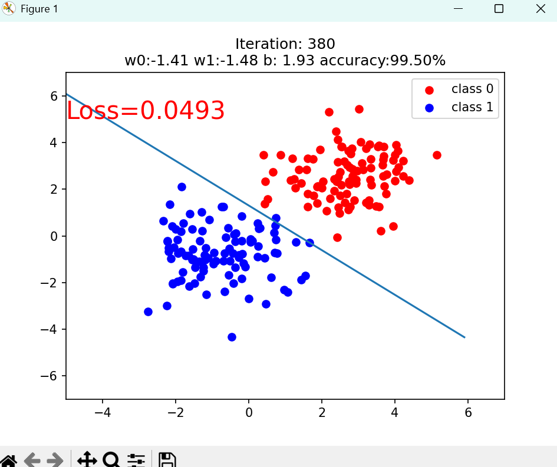
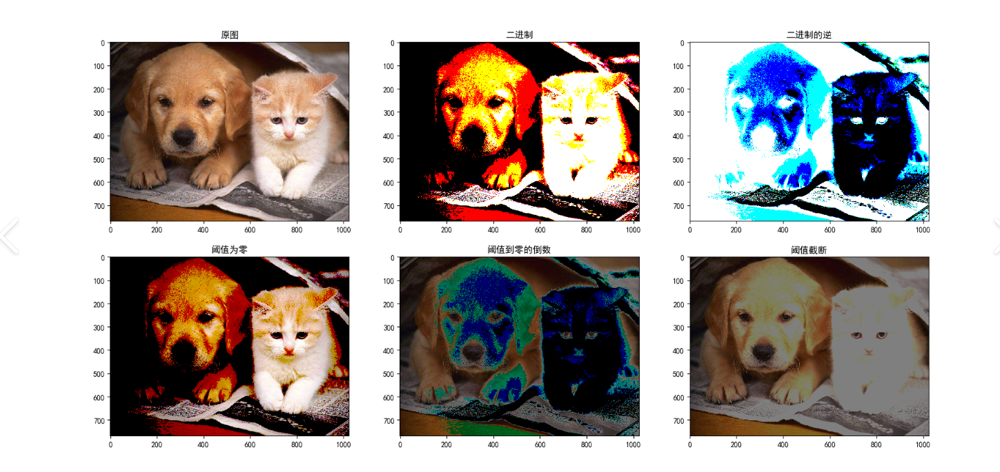

pytorch study
1、关于Tensor
Tensor中文名为张量，表示多维数组，例如标量可以称作0维张量，向量被称作1维张量，矩阵被称作2维张量，RGB图像表示成3维张量，理解成立方体，不过维度超过3时就很难去用一个具体的东西去表示了
创建Tensor
直接创建
torch.tensor()
1 | torch.tensor(data,dtype=None,device=None,requires_grad=False,pin_memory=False) |
data:数据，可以是list，numpy
dtype（datatype）:数据类型，默认和data一致
device:所在的设备，例如cuda/cpu
requires_grad:是否需要梯度
pin_memory:是否存在于锁页内存（用于固定住内存，利于GPU直接将数据运走，提高数据传输速率）
1 | import torch |
输出：
1 | tensor([[1., 1., 1.], |
torch.from_numpy(ndarray)
从numpy中创建tensor，这个方法可以使得创建的tensor和原来的ndarray共享内存，修改其中的数据时，另一个也会产生相同的变化
1 | import torch |
输出
1 | after change |
根据数值来创建Tensor
torch.zeros()
根据size来创建全0张量
1 | torch.zeros(*size,out=None,dtype=None,layout=torch.strided,device=None,requires_grad=False) |
size:张量的形状
out:输出的张量，如果设定了out那么torch.zeros()返回的张量和out指向的是同一个地址
layout:内存中的布局形式
1 | import torch |
输出
1 | tensor([1]) |
torch.zeros_like()
根据input的形状来创建全0张量
1 | torch.zeros_like(input,dtype=None,layout=None,device=None,requires_grad=False,memory_format=torch.preserve_format) |
input：创建和input形状相同的全0张量
同理还有全1张量的创建方法：torch.ones() , torch.ones_like()
torch.full(),torch.full_like()
1 | torch.full(size, fill_value, out=None, dtype=None, layout=torch.strided, device=None, requires_grad=False) |
创建自定义数值的张量
fill_value：张量中每一个元素的值
1 | t = torch.full((3,3),1) |
输出
1 | tensor([[1, 1, 1], |
torch.arange()
1 | torch.arange(statr=0,end,step=1,out=None,dtype=None,layout=torch.strided,device=None,requires_grad=False) |
创建等差的1维张量，区间为[start,end)
start：起始值
end：结束值，取不到
step：公差，默认为1
1 | t = torch.arange(1,10,2) |
输出
1 | tensor([1, 3, 5, 7, 9]) |
torch.linspace()
1 | torch.linspace(start, end, steps=100, out=None, dtype=None, layout=torch.strided, device=None, requires_grad=False) |
创建均分的1维张量，区间：[start,end]
step为元素个数
1 | t = torch.linspace(2,10,6) |
输出
1 | tensor([ 2.0000, 3.6000, 5.2000, 6.8000, 8.4000, 10.0000]) |
torch.logspace
1 | torch.logspace(start, end, steps=100, base=10.0, out=None, dtype=None, layout=torch.strided, device=None, requires_grad=False) |
先对原数据进行均分，再对base取幂
1 | t = torch.logspace(2,10,6) #base默认为10 |
输出
1 | tensor([1.0000e+02, 3.9811e+03, 1.5849e+05, 6.3096e+06, 2.5119e+08, 1.0000e+10]) |
torch.eye()
1 | torch.eye(n, m=None, out=None, dtype=None, layout=torch.strided, device=None, requires_grad=False) |
创建单位对角矩阵，默认为方阵
n：行
m：列
1 | t = torch.eye(3) |
输出
1 | tensor([[1., 0., 0.], |
根据概率创建tensor
torch.normal()
1 | torch.normal(mean, std, *, generator=None, out=None) |
创建正态分布
对于高斯分布函数：
mean：均值
std：标准差
一共有四种模式
1、mean为标量，std为标量
此时需要设置size，因为如果不设置，计算机就不知道生成的张量是什么形状的(接收的参数为浮点型)
1 | t = torch.normal(0.0,1.0,size = (4,)) |
输出
1 | tensor([1.3443, 0.8496, 0.2819, 0.9166]) |
2、mean为标量、std为张量
1 | t = torch.normal(0.0,torch.tensor([1.0,2.0,3.0,4.0])) |
输出
1 | tensor([ 1.5031, -0.8246, -3.1613, -7.3267]) |
这里不用设置size是因为std为张量，操作系统知道应该生成什么样的张量
3、mean为张量、std为标量
1 | t = torch.normal(torch.tensor([1.0,2.0,3.0,4.0]),1.0) |
输出
1 | tensor([0.8114, 2.7125, 1.5905, 4.0442]) |
4、mean为张量、std为张量
此时两个张量的形状必须要相同
1 | a = torch.arange(1,5).float() |
输出
1 | tensor([0.6826, 1.7303, 4.3606, 2.8042]) |
torch.randn() torch.randn_like()
1 | torch.randn(*size, out=None, dtype=None, layout=torch.strided, device=None, requires_grad=False) |
对于randn()要手动输入张量的形状，随后去创建一个基于标准正态分布随机数张量
1 | t = torch.randn((2,3)) |
输出
1 | tensor([[ 0.1565, 0.3135, -0.5718], |
torch.rand() torch.rand_like()
1 | torch.rand(*size, out=None, dtype=None, layout=torch.strided, device=None, requires_grad=False) |
与上面的区别是少了个n(normal)，所以这个是个均匀分布取法，区间是[0,1)
1 | t = torch.rand((2,3)) |
输出
1 | tensor([[0.4582, 0.7061, 0.5564], |
torch.randint() torch.randint_like
1 | torch.randint(low=0, high, size, *, generator=None, out=None, |
在区间[low,high)生成整数均匀分布
1 | t = torch.randint(10,20,(2,3)) |
输出
1 | tensor([[18, 19, 12], |
torch.randperm()
1 | torch.randperm(n, out=None, dtype=torch.int64, layout=torch.strided, device=None, requires_grad=False) |
生成从0到n-1的随机排列，必定是一维张量
1 | t = torch.randperm(21) |
输出
1 | tensor([ 1, 7, 4, 18, 20, 17, 8, 6, 9, 11, 13, 19, 14, 12, 2, 10, 0, 15, 16, 5, 3]) |
torch.bernoulli()
伯努利分布也就是01分布，对于某一个事件，只有两种可能
1 | torch.bernoulli(input, *, generator=None, out=None) |
对于输入张量的每一个元素值为概率，独立地生成0或1(由于是基于对应元素的值作为概率，所以这个值的范围应该是0~1)
Expected p_in >= 0 && p_in <= 1 to be true
1 | t = torch.rand((2,3)) |
输出
1 | tensor([[0.1591, 0.9870, 0.9120], |
对张量的操作
拼接
torch.cat()
1 | torch.cat(tensors, dim=0, out=None) |
将张量按照dim维度进行拼接,此方法并不会改变该张量的维度
1 | t = torch.ones((2,3)) |
输出
1 | t0: |
torch.stack()
1 | torch.stack(tensors, dim=0, out=None) |
将张量在新创建的dim维度上进行拼接
1 | t = torch.ones((2,3)) |
输出
1 | tensor([[[1., 1., 1.], |
切分
torch.chunk()
1 | torch.chunk(input, chunks, dim=0) |
将张量按照维度dim进行平均切分。若不能整除，则最后一份张量小于其他张量,该函数的返回值是元组
1 | t = torch.ones((2,7)) |
输出
1 | 第1个张量的shape是torch.Size([2, 3]) |
torch.split()
1 | torch.split(tensor, split_size_or_sections, dim=0) |
将张量按照dim进行平均或者指定长度的切分
split_size_or_sections:当值为int类型时，效果和chunk()效果一致，当为list时，按照list元素作为每一个分量的长度进行切分
1 | t = torch.ones((2,7)) |
输出
1 | 1th tensor'shape is torch.Size([2, 2]) |
引索
torch.index_selectI()
1 | torch.index_select(input, dim, index, out=None) |
根据dim，按照index索引取出数据再拼接成张量返回
1 | t = torch.randint(0,9,size=(3,3)) |
输出
1 | tensor([[5, 5, 4], |
torch.masked_select()
1 | torch.masked_select(input, mask, out=None) |
按照mask的True值进行索引返回一维张量
mask:与input同形状的布尔类型的张量
1 | t = torch.randint(0,9,size=(3,3)) |
输出
1 | tensor([[2, 2, 5], |
变换
torch.reshape()
1 | torch.reshape(input, shape) |
改变张量的形状，当张量在内存中是连续时，返回的张量和原来的张量共享数据内存，改变一个元素，另一个对应的元素也会改变
1 | t = torch.randperm(8) |
输出
1 | t :tensor([0, 7, 1, 4, 2, 3, 5, 6]) |
修改元素值
1 | t = torch.randperm(8) |
输出
1 | t :tensor([0, 6, 5, 2, 7, 4, 1, 3]) |
torch.transpose
1 | torch.transpose(input, dim0, dim1) |
交换张量的两个维度
1 | t = torch.rand((2,3,4)) |
输出
1 | t shape: |
torch.t()
将二维张量转置，等价于torch.transpose(input,0,1)
torch.squeeze()
1 | torch.squeeze(input, dim=None, out=None) |
压缩/删除长度为1的维度
1 | t = torch.rand((1,2,3,1)) |
输出
1 | torch.Size([2, 3]) |
可以看出如果不指定dim的时候会压缩所有元素数量为1的维度，指定的时候如果该元素数为1时可以删除，否则不会删除
torch.unsqueeze()
1 | torch.unsqueeze(input, dim) |
在指定位置插入一个大小为1的维度
1 | t = torch.rand((2,3)) |
输出
1 | torch.Size([1, 2, 3]) |
对于dim的值范围是： -(维度数+1)~维度数
所以对于二维张量，当dim=0，也可以写成dim=-3
张量的数学运算
主要分成3类：加减乘除、对指幂和三角函数
torch.add()
1 | torch.add(input, other, out=None) |
对于第一种，没有alpha就是简单的相加
1 | a = torch.tensor([1,2,3]) |
输出
1 | tensor([11, 22, 33]) |
对于第二种，计算的是input + alpha*other
1 | a = torch.tensor([1,2,3]) |
输出
1 | tensor([21, 42, 63]) |
这里的alpha不能按位传输，因为参数前面有*，必须要用关键字参数传入，之前的函数方法参数里面涉及到的都是这样
torch.addcdiv()
1 | torch.addcdiv(input, tensor1, tensor2, *, value=1, out=None) |
逐元素计算 input + value * (tensor1/tensor2)
value默认为1
1 | t0 = torch.tensor([1.,2.,3.]) |
输出
1 | tensor([6., 7., 9.]) |
因为这里t0初始化的时候是整型张量，而后面的除法会出现float浮点型，二者不可以直接相加，所以建议都用浮点型
torch.addcmul()
1 | torch.addcmul(input, tensor1, tensor2, *, value=1, out=None) |
计算公式: input + value * (tensor1 * tensor2)
1 | t0 = torch.tensor([1.,2.,3.]) |
输出
1 | tensor([ 21., 82., 153.]) |
2、构建模型步骤
1、数据处理
数据读取：从文件、数据库等地方加载进来
数据清洗：去除缺失值、异常值、重复的数据
数据划分：将数据划分成训练集和测试集
数据预处理：归一化、标准化、数据增强等
2、模型确立
构建模型模块：定义网络结构
定义网络层：选择线性层、卷积层、循环层等
初始化参数：权重w和偏置b的初始值
3、损失函数
衡量学得好不好
| 任务类型 | 常用损失函数 | 含义 |
|---|---|---|
| 回归 | MSE（均方误差） | 预测值和真实值的平方 |
| 二分类 | BCE（二元交叉熵） | 预测概率和真实标签的差距 |
| 多分类 | CrossEntropy（交叉熵） | 预测概率分布和真实分布的差距 |
4、优化器
如何改进，其核心工作：
1、通过反向传播获得梯度
2、根据梯度和学习率更新参数 w = w -lr*梯度
3、管理所有需要更新的参数
5、迭代训练
将上面的步骤反复循环，不断训练更新，同时还会：
监控训练效果：每隔若干轮打印Loss和准确率
可视化：画图看决策边界怎么变化
早停：准确率达到自己设置的目标就停止，不用跑完所有轮次
3、线性回归
线性回归是分析一个变量y和另一个或多个变量x之间关系的方法，一般可以写成
线性回归的目的就是求解参数w和b
中学阶段学过用最小二乘法得出的精确公式计算过，但在计算机里情况往往是复杂的，不能说只靠一个公式来解决所有，因为对于一般的训练，大致的步骤是相似的
对于一个线性回归的例子，代码如下
1 | import torch |
最终体现出来的结果并不是很好，或者是训练次数太少，也可能是lr太大导致在局部跨越出现了问题

4、关于计算图
上面的线性回归例子中提到了这一词，本质是用来描述运算的有向无环图，主要有两个元素
1、节点(Node)：表示数据
2、边(Edge)：表示运算，例如加减乘除卷积等等
再用计算图表示y=(x+w)∗(w+1)时，可以堪称y = a*b，其中a = x+w , b = w+1
在这里y对w的导数，根据链式法则可以得到：
算出结果得到为5
1 | import torch |
输出
1 | tensor([5.]) |
叶子节点(is_leaf)
在Tensor中有一个属性is_leaf标记是否为叶子节点，在上面的例子中对于y来说下x,w是叶子节点，其他所有的节点都依赖于叶子节点，叶子节点主要是为了节省内存，在一轮反向传播过程结束后，非叶子节点的梯度都会被释放
1 | import torch |
输出
1 | is_leaf: |
如果想在反向传播结束后保留非叶子节点的梯度，可以对节点使用retain_grad()方法
梯度函数（grad_fn）
Tensor中的grad_fn属性记录的是创建该张量时所用的方法，在反向传播求梯度的时候需要用到这个属性
1 | import torch |
输出
1 | w.grad_fn = None |
pytorch的动态图机制
动态图机制，也叫边运行边定义，代码执行到哪一行，计算图就建到哪一行
1 | import torch |
1 | 创建节点a：记录a = x + w |
在执行每一步时，pytorch都会先计算出当前节点的值，然后记住这个节点是怎么计算出来的（也就是grad_fn），为后续的反向传播做准备
关于特点
1、每次迭代的时候，图都是全新的，每次向前传播都会重新搭建一张计算图，反向传播完成之后，这张计算图就会被自动释放了，在一下迭代时会从新创建计算图
2、由于其动态机制，可以直接用if、for、while等python语法决定计算图的形状
1 | def forward(x): |
但对于静态图，由于其要求提前把所有分支都定义好，所以不能说是中途变换计算图路径
3、可以随时输出中间结果，但是在静态图中，参数只是图上符号的节点，在真正运行之前没有具体的值，所以不可以直接print
4、反向传播之后，非叶子节点的梯度会自动释放
5、自动求导（autograd）
计算梯度在更新权值时十分重要，当搭建好前向计算图，之后利用torch.autograd自动求导就可以得到被标记成requires_grad = True的张量的梯度了
torch.autograd.backward()
1 | torch.autograd.backward(tensors, grad_tensors=None, retain_graph=None, create_graph=False, grad_variables=None) |
tensors:求导的张量
retain_graph:保存计算图，由于采用动态图机制的原因，默认每次反向传播之后会释放计算图，这里设置成True的话就不会释放计算图了
create_graph:创建导数计算图，用于高阶求导
grad_tensors:多梯度权重，如果有多个loss混合需要计算梯度时，设置每个loss的权重
retain_graph
1 | w = torch.tensor([1.], requires_grad=True) |
1 | tensor([5.]) |
第一次成功了，但是第二次失败了，原因就是因为动态图机制的问题，只要在第一次求导的时候设置一下retain_graph参数就行了
1 | w = torch.tensor([1.], requires_grad=True) |
输出
1 | tensor([5.]) |
当然这并不是二阶导，同样的也还是一阶导数，只不过第二次的结果是第一次的累积
grad_tensors
1 | w = torch.tensor([1.], requires_grad=True) |
torch.autograd.grad()
1 | torch.autograd.grad(outputs, inputs, grad_outputs=None, retain_graph=None, create_graph=False, only_inputs=True, allow_unused=False) |
outputs:用于求导的张量
inputs:需要梯度的张量
create_graph:创建导数计算图，用于求高阶导数
torch.autograd.grad()返回值类型是元组，需要取出索引值为0的元素才是真正的梯度
1 | import torch |
输出
1 | (tensor([6.], grad_fn=<MulBackward0>),) |
对于之前提到的w.grad中知道，对于梯度的存储是累积的，所以在进行多次迭代计算的时候要清零
1 | w = torch.tensor([1.], requires_grad=True) |
1 | tensor([5.]) |
所以在每次进行新一轮的计算时要对grad清零
1 | w=torch.tensor([1.],requires_grad=True) |
1 | tensor([5.]) |
因为梯度的计算依赖于叶子节点，所以requires_grad要设置为True
叶子节点不可执行inplace（原地操作）操作
inplace指的是不创建新对象，直接在原来的内存地址上进行修改数据
非inplace操作值得是创建一个新对象，原对象不变
原因在于反向传播需要用到前向传播时叶子节点的原始值，但inplace操作把原始值覆盖了，所以会报错
1 | w = torch.tensor([3.],requires_grad = True) |
每个非叶子节点在创建的时候会记住自己是怎么算出来的（grad_fn），以及依赖了哪些叶子节点
算出导数为2w，w的原始值是3，算出的梯度应该为6
但是如果在前向传播之后，反向传播之前，对w使用了inplace操作，会直接报错
对于这一问题，pytorch会对张量内部的版本号进行检测
1 | w = torch.tensor([1.],requires_grad=True) |
1 | PS D:\29493\桌面\AI agent> python -u "d:\29493\桌面\AI agent\Pytorch\return.py" |
6、逻辑回归（Logistic Regression）
线性回归做的事是给定一个x，通过拟合一个线性函数z = wx+b，输出一个连续值z，这个值的大小是任意的
但现实中很多问题是需要分类的，需要的输出不一定是一个任意的数字，而是一个概率。所以需要通过一个函数将定义域从R压缩到(0,1)，这个函数也就是sigmoid函数
这个函数是关于(0,0.5)的中心对称函数，值域：(0,1)，单调递增的函数
而0也正好成为分界线，所以它能表达好置信度
结合之前的线性回归就会变成这样
对于这个模型，也叫做对数几率回归
几率（odds）:事件发生的概率与不发生的概率之比，对其取对数，再从假说：对数几率是输入的线性函数
1 | import torch |

关于上述没有讲清的损失函数和优化器
1、BCELoss（二元交叉熵损失）
解决的问题：模型输出一个概率y^，真实标签y是0或1，衡量的是模型预测的概率和真实标签之间的差距有多大
公式：
不管对于哪一种真实标签其都会转换成一个很简单的式子
所以可以的出结论：当预测概率越接近真实标签，损失就会越小，预测概率越偏离真实标签，损失就会越大，并且错的越离谱，其损失程指数级增长
为什么不用简单的差值：我们知道对于简单没有系数的减法其导数值是为1的，但是对于ln的导数例如lnx的导数为1/x，而概率的大小区间为（0，1），在这段的变化是大于简单的差值的，所以这样子会导致梯度放大，会持续地推动模型往更准确的方向优化。
2、SGD优化器
SGD的任务就是调整参数，让loss变小
对于不带动量的SGD
上面其实遇到过，就是简单的参数更新
对于带动量的SGD
1 | optimizer = torch.optim.SGD(lr_net.parameters(), lr=0.01, momentum=0.9) |
更新公式会变成：
v是速度的意思，初始值为0
可以将其当作球在山谷中滚动来理解
不带动量时，球每到一个位置。只会看坡度的方向，然后走进一小步（lr），如果山谷很窄的话，lr设置有不合理，梯度方向变化剧烈，球就会来回震荡，走的很慢
带动量时：球会记住之前滚动的方向，如果连续几步都往同一个方向走，速度会越来越快，加速收敛。如果方向突然变了，球不会立刻掉头，而是平滑过渡
7、DataLoader与DataSet
关于人民币的二分类
Pytorch基于五大模块：数据、模型、损失函数、优化器、迭代训练
对于数据来说又可以细分成五部分
1 | *数据收集：样本、标签 |
torch.utils.data.DataLoader()
1 | torch.utils.data.DataLoader(dataset, batch_size=1, shuffle=False, sampler=None, batch_sampler=None, num_workers=0, collate_fn=None, pin_memory=False, drop_last=False, timeout=0, worker_init_fn=None, multiprocessing_context=None) |
关于DataLoader，这个是Pytorch中用于批量加载数据的一个工具，会按照定义好的数据集，并按照设定的规则一批一批地把数据送到模型面前
在深度学习中，通常并不会一次性地将所有数据喂给模型（一是内存原因，二是这样地训练效果也不好），而是分批次(batch)地输入
各个参数：
dataset （数据集）
数据集的来源，首先是要定义一个Dataset类的对象，告诉程序数据在哪里，怎么去读取
batch_size(批大小)
每次从数据集中取出多少个样本组成一个批次
shuffle（是否打乱）
若设置成了True，则每个epoch开始时，数据的顺序会被打乱，否则会按照原始顺序依次读取
num_workers（多进程读取）
设置成0（默认）代表在主进程中读取数据，设置成正数代表开启多个子进程并行读取数据
drop_last（是否丢弃末尾不完整的批次）
当样本总数不能够被batch_size整除的时候，若该参数设置成True则会丢弃这个余数，否则会保留
sampler、batch_sampler
分别自定义采样策略、批次采样策略
collate_fn
自定义如何将一组样本合并成一个batch
关于Epoch、Iteration、Batchsize
1 | Epoch：所有的训练样本都被模型看过依次，称作完成了一个Epoch |
根据drop_last参数的设置，决定是向上取整还是向下取整
关于什么时候要舍弃最后的样本，一般说如果最后一个batch的样本数量太少(比如只有1-2个)，这样会导致BN的统计量计算不准确，影响训练效果，这时通常会丢弃末尾不完整的batch
torch.utils.data.Dataset
Dataset是一个抽象类，所有自定义的Dataset都要继承这个类，并重写__getitem()__和__len()__方法，前者的作用是接收一个索引然后返回索引对应的样本和标签，后者是返回所有样本的数量
现在的目的是将硬盘上的人民币图片加载到Pytorch的训练流程之中，这就需要DataLoader和Dataset打配合，除了上面两个要自己补全写法的两个函数，还有一个核心部分：_init_，初始化准备好所有数据的信息包括路径和标签
get_img_info() ----扫描目录，获得所有图片的路径和标签
1 |
|
虽有要舒适化Dataset
1 | def __init__(self,data_dir,transform=None): |
这样就在创建Dataset实例的时候会自动调用初始化，首先调用get_img_info函数获得对应图片的完整路径和标签存储在data_info里面
1 | def __getitem__(self,index): #按照索引取出一个样本 |
1 | def __len__(self): |
返回数据集中的样本总数，供DataLoader来确定每个epoch有多少个batch，确定iteration
8、图片预处理以及transforms模块
有这么一个包torchvison,这个是计算机视觉工具包，一共有三个模块
1 | * torchvision.transforms：包括常用的图像预处理方法 |
深度学习模型是由数据驱动的，所以说数据的数量和质量对模型训练很重要。所以对数据进行预处理和增强是很重要的，例如一张图片经过各种变换可以生成其它图片，增强了数据的多样性，提高泛化能力

1 | 常见图像预处理方法： |
在后续有对人民币图片二分类的实验，这里先不具体展开。其中涉及到了一些数据增强
1 | # 设置训练集的数据增强和转化 |
当需要对多个transforms操作的时候，需要作为一个list放在transforms.Compose中
transforms.ToTensor()()
将图片转换为张量，同时进行归一化操作
在转换前图片在硬盘上是一个.jpg文件，通过PIL读入后作为PIL Image对象，但Pytorch只能接收张量的输入，所以要用这个方法做一次格式转换
转换前：
1 | 对于PIL Image |
转换后：
1 | 数据类型：float32 形状：(C,H,W) = (通道，高，宽) 像素值范围：0.0~1.0 |
随后将这两个transform操作作为参数传给Dataset,在__getitem()方法中做图像增强
1 | def __getitem__(self,index): #按照索引取出一个样本 |
在到self.transform(img)的时候会调用Compose的_call_()函数
1 | def __call__(self,img): |
遍历transforms中的函数，按照顺序应用到img中
transforms.Normalize
1 | torchvision.transforms.Normalize(mean, std, inplace=False) |
让每个通道的像素值变成均值为0，标准差为1的分布
output = (input - mean) / std
这个本质是调用内部的F.normalize(tensor, self.mean, self.std, self.inplace)
1 | def normalize(tensor, mean, std, inplace=False): |
这里首先会判断是否是tensor，不是就会抛出异常，然后判断是否是inplace操作，不是的话就clone额外创造一个副本，然后把mean和std都转换成tensor，原本是list，然后进行标准化 加快了模型的收敛
1 | 关于这里的标准化有个维度技巧 |
对于图片Tensor来说形状是(3，32，32)
通过这一技巧shape变成(3,1,1,)后，pytorch的广播机制会自动将其拓展到(3,32,32)，使得每个通道的32*32像素都减去同一个均值
所以在这里
1 | tensor.sub_(mean[:, None, None]).div_(std[:, None, None]) |
就能做到output = (input - mean)/std的效果
9、一些transforms图片数据预处理方法
1、裁剪
transforms.CenterCrop
1 | torchvision.transforms.CenterCrop(size) |
从图像中心裁剪图片
size：所需裁剪的图片效果
如果裁剪的size比原图还大，那就会填充像素值为0的像素
transforms.RandomCrop
1 | torchvision.transforms.RandomCrop(size, padding=None, pad_if_needed=False, fill=0, padding_mode='constant') |
从图片中随机裁剪出尺寸为size的图片，如果有padding的话，先进行padding，然后再随机裁剪size大小的图片，这样能够增加裁剪的多样性
padding：设置填充大小
1 | *当为a时，上下左右都填充a个像素 |
pad_if_need：当图片小于设置的size的时候是否填充
padding_mode:
1 | constant：固定值填充、像素值由fill决定，默认是0 |
transforms.RandomResizedCrop
1 | torchvision.transforms.RandomResizedCrop(size, scale=(0.08, 1.0), ratio=(0.75, 1.3333333333333333), interpolation=2) |
scale：控制裁剪的面积，其范围代表随机选取原图面积的8%~100%来裁剪
ratio：控制宽高比，影响裁剪形状
interpolation：插值方法，在经历上面两个操作过后，其尺寸不一定等于size，这hi后就要缩放了，但是由于缩放，很多地方的像素点的值是未知的，所以需要插值猜出新像素的值
NEAREST （最近邻插值）
1 | │ A B │ │ A A B B │ |
BILINEAR （双线性插值）
1 | │ A ? B │ |
BICUBIC （双三次插值）
transforms.FiveCrop(TenCrop)
1 | torchvision.transforms.FiveCrop(size) |
FiveCrop会在图像的四个角和中心裁剪出尺寸为size的5张图片。Tencrop对这五张图片进行水平或者垂直镜像获得10张照片
vertical_flip：是否垂直翻转
这两个方法的返回值类型都是元组，每个元素都表示一个图片
所以这里就出现了一点问题，对于其它的transform操作是输入一张图，输出一张图，整个过程处理的都是单个对象，但是对于这两个返回的是元组，并不是单个Image，影响后续的transform
那这里可以用这段代码解决：
1 | transforms.Lambda(lambda crops: torch.stack([ |
然后在transforms.Compose中要注释掉这两行
1 | transforms.ToTensor() ,这个是因为在Lambda里面已经进行过了ToTensor了 |
2、旋转和翻转
transforms.RandomHorizontalFilp(RandomVerticalFlip)
根据概率，在水平或者垂直方向上进行翻转图片
1 | transforms.RandimHorizontalFlip(p = 0.5)，一半的图片会被水平翻转 |
transforms.RandomRotation
1 | torchvision.transforms.RandomRotation(degrees, resample=False, expand=False, center=None, fill=None) |
把图片绕某个点旋转随机一个角度
1 | degree：旋转的角度： |
正数表示逆时针旋转
1 | expand：是否要扩大画布 |
但是由于随机性，导致计算出来的shape并不一样，这在batch中会出错
Pytorch要求batch里的Tensor出了batch维度外，其他维度必须一致，显然这里再W,H不一致
当然，这一问题可以通过旋转后再统一尺寸解决
1 | center: 旋转的中心点 |
1 | resample：重采样方法 |
3、图像变换
Pad
1 | torchvision.transforms.Pad(padding, fill=0, padding_mode='constant') |
在上面的裁剪有个相似的概念，对边缘进行填充
torchvision.transforms.ColorJitter
1 | torchvision.transforms.ColorJitter(brightness=0, contrast=0, saturation=0, hue=0) |
随机调整图片的亮度、对比度、饱和度、色相，抵消拍摄过程中由于各种因素带来的色彩偏差
1 | brightness：亮度，控制图片整体变亮还是变暗 |
1 | contrast：对比度（明暗差异） |
1 | saturation = 0.5 区间生成机制和上述一致 |
1 | hue：色相（颜色本身的变化） |
transforms.Grayscale(RandomGrayscale)
1 | torchvision.transforms.Grayscale(num_output_channels=1) |
将彩色图片（RGB三通道）转换为灰度图（单通道）
1 | 转换原理： |
1 | num_output_channels:输出通道数，值可以设置成1或者3 |
1 | torchvision.transforms.RandomGrayscale(p=0.1, num_output_channels=1) |
每次调用都有10%的概率把图片转换成灰度
transforms.RandomAffine
1 | torchvision.transforms.RandomAffine(degrees, translate=None, scale=None, shear=None, resample=False, fillcolor=0) |
对图片进行仿射变换（旋转、平移、缩放、错切、翻转）
每次调用从各个参数的范围随机选取一组数值，组合起来进行一次变换
1 | degree：旋转 |
1 | translate：平移 |
平移后画布大小不变，超出画布的部分会被裁掉，空出来的部分根据fill来填充
1 | scale：缩放。控制图片的缩放比例 |
1 | shear：错切 |
错切角度理解成arctan(1/m)就可以了（水平错切的情况）
transforms.RandomErasing
1 | torchvision.transforms.RandomErasing(p=0.5, scale=(0.02, 0.33), ratio=(0.3, 3.3), value=0, inplace=False) |
在图片上随机选一个矩形区域，用指定值覆盖，模拟被遮挡的情况，使模型不过度依赖某个局部特征
对于RandomErasing来说接收的使Tensor，所以要在ToTensor步骤之后使用
1 | p：执行遮挡概率，每次调用独立判断 |
1 | scale:遮挡面积比例 |
1 | ratio：遮挡区域的长宽比，用法和上一个一样 |
1 | value：遮挡区域填什么。 |
transforms.Lambda
自定义transforms方法
1 | transforms.Lambda(lambda crops: torch.stack([(transforms.ToTensor()(crop)) for crop in crops])) |
例如这里就用到了自定义的方法，把元组里面的5个图片，整合成了四维的tensor
4、transforms的操作
RandomChoice
1 | torchvision.transforms.RandomChoice([transforms1, transforms2, transforms3]) |
从一些列的transforms方法中随机选择一个
RandomApply
1 | torchvision.transforms.RandomApply([transforms1, transforms2, transforms3], p=0.5) |
根据概率执行一组transforms操作，要么全部执行，要么不执行
RandomOrder
1 | transforms.RandomOrder([transforms1, transforms2, transforms3]) |
对一组transforms操作打乱顺序